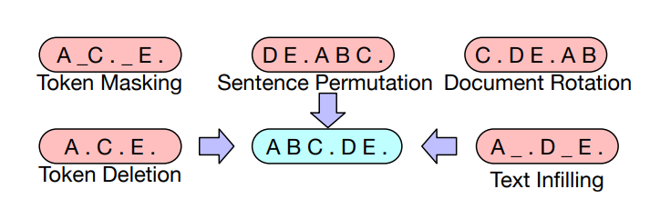
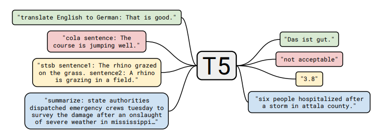

\(\newcommand{\sV}{\mathcal{V}} \newcommand{\sO}{\mathcal{O}} \newcommand{\sD}{\mathcal{D}} \newcommand{\sN}{\mathcal{N}} \newcommand{\R}{\mathbb{R}} \newcommand{\E}{\mathbb{E}} \newcommand{\x}{x_{1:L}} \newcommand{\tx}{\tilde x_{1:L}} \newcommand{\nl}[1]{\textsf{#1}} \newcommand{\softmax}{\text{softmax}} \newcommand{\TransformerBlock}{\text{TransformerBlock}} \newcommand{\EmbedTokenWithPosition}{\text{EmbedTokenWithPosition}} \newcommand{\SentenceEmbedding}{\text{SentenceEmbedding}} \newcommand{\BERT}{\text{BERT}} \newcommand{\MASK}{\nl{[MASK]}} \newcommand{\SEP}{\nl{[SEP]}} \newcommand{\CLS}{\nl{[CLS]}} \newcommand{\generate}[1]{\stackrel{#1}{\rightsquigarrow}} \newcommand{\embed}{\stackrel{\phi}{\Rightarrow}}\) Last lecture, we talked about the model architecture for large language models (e.g., the Transformer). In this lecture, we will discuss how to train large language models.
Objective functions
We will consider objective functions for the three types of language models:
- Decoder-only (e.g., GPT-3): compute unidirectional contextual embeddings, generate one token at a time
- Encoder-only (e.g., BERT): compute bidirectional contextual embeddings
- Encoder-decoder (e.g., T5): encode input, decode output
We can use any model that maps token sequences into contextual embeddings (e.g., LSTMs, Transformers):
\[\phi : \sV^L \to \R^{d \times L}.\] \[[\nl{the}, \nl{mouse}, \nl{ate}, \nl{the}, \nl{cheese}] \embed \left[\binom{1}{0.1}, \binom{0}{1}, \binom{1}{1}, \binom{1}{-0.1}, \binom{0}{-1} \right].\]Decoder-only models
Recall that an autoregressive language model defines a conditional distribution:
\[p(x_i \mid x_{1:i-1}).\]We define it as follows:
- Map \(x_{1:i-1}\) to contextual embeddings \(\phi(x_{1:i-1})\).
- Apply an embedding matrix \(E \in \R^{V \times d}\) to obtain scores for each token \(E \phi(x_{1:i-1})_{i-1}\).
- Exponentiate and normalize it to produce the distribution over \(x_i\).
Succinctly:
\[p(x_{i+1} \mid x_{1:i}) = \softmax(E \phi(x_{1:i})_i).\]Maximum likelihood. Let \(\theta\) be all the parameters of large language models.
Let \(\sD\) be the training data consisting of a set of sequences. We can then follow the maximum likelihood principle and define the following negative log-likelihood objective function:
\[\sO(\theta) = \sum_{\x \in \sD} -\log p_\theta(\x) = \sum_{\x \in \sD} \sum_{i=1}^L -\log p_\theta(x_i \mid x_{1:i-1}).\]There’s more to say about how to efficiently optimize this function, but that’s all there is for the objective.
Encoder-only models
Unidirectional to bidirectional. A decoder-only model trained using maximum likelihood above also produces (unidirectional) contextual embeddings, but we can provide stronger bidirectional contextual embeddings given that we don’t need to generate.
BERT. We will first present the BERT objective function, which contains two terms:
- Masked language modeling
- Next sentence prediction
Take the example sequence for natural language inference (predict entailment, contradiction, or neutral):
\[\x = [\CLS, \nl{all}, \nl{animals}, \nl{breathe}, \SEP, \nl{cats}, \nl{breathe}].\]There are two special tokens:
- \(\CLS\): contains the embedding used to drive classification tasks
- \(\SEP\): used to tell the model where the first (e.g., premise) versus second sequence (e.g., hypothesis) are.
Using our notation from the previous lecture, the BERT model is defined as:
\[\BERT(\x) = \TransformerBlock^{24}(\EmbedTokenWithPosition(\x) + \SentenceEmbedding(\x)) \in \R^{d \times L},\]where \(\SentenceEmbedding(\x)\) returns one of 2 vectors depending on the sequence:
- \(e_A \in \R^d\) for tokens left of \(\SEP\), and
- \(e_B \in \R^d\) for tokens right of \(\SEP\).

BERT-large has \(n_\text{heads} = 16\) attention heads, and a \(d_\text{model} = 1024\) dimensional model, resulting in 355M parameters.
Masked language modeling. The basic idea of the masked language model is to train on the prediction problem:
\[[\nl{the}, \MASK, \nl{ate}, \MASK, \nl{cheese}] \Rightarrow [\nl{the}, \nl{mouse}, \nl{ate}, \nl{the}, \nl{cheese}].\]More more generally, we can think of this as similar to a denoising autoencoder where we map a noisy / incomplete version \(\tx\) and try to reconstruct the original \(\x\).
\[\tx \Rightarrow \x.\]Model. We first define the model distribution that takes \(\tx\) and predicts each token independently given the contextual embedding:
\[p(x_i \mid \tx) = \softmax(E \phi(\tx)_i).\]Masking function. We define a (stochastic) noising function \(A(\tx \mid \x)\) that:
\[\underbrace{\x}_\text{original} \stackrel{A}{\Rightarrow} \underbrace{\tx}_\text{noised}.\]Here’s how \(A\) is defined:
- Let \(I \subset \{1, \dots, L\}\) be a random 15% of the tokens positions.
- For each \(i \in I\):
- With probability 0.8, set \(\tilde x_i \leftarrow \MASK\).
- With probability 0.1, set \(\tilde x_i \leftarrow x_i\).
- With probability 0.1, set \(\tilde x_i \leftarrow \text{random word from } \sV\).
Reducing distribution shift. If we were to always replace chosen tokens in \(I\) with \(\MASK\), then:
- During training, every input BERT would only see sequences with a \(\MASK\).
- At test time, we would feed in sentences with no \(\MASK\), resulting in a distribution shift. The heuristic fix is to replace with real words 20% of the time.
Next sentence prediction. Recall that BERT is trained on pairs of sentences concatenated. The goal of next sentence prediction is to predict whether the second sentence follows from the first or not.
\([\CLS, \nl{the}, \nl{mouse}, \nl{ate}, \nl{the}, \nl{cheese}, \SEP, \nl{it}, \nl{was}, \nl{full}] \Rightarrow 1\).
\([\CLS, \nl{the}, \nl{mouse}, \nl{ate}, \nl{the}, \nl{cheese}, \SEP, \nl{hello}, \nl{world}] \Rightarrow 0\).
We will use the embedding of the \(\CLS\) token to make this binary classification decision.
Dataset. Let \(\sD\) be a set of examples \((\x, c)\) constructed as follows:
- Let \(A\) be a sentence from the corpus.
- With probability 0.5, let \(B\) be the next sentence.
- With probability 0.5, let \(B\) be a random sentence from the corpus.
- Let \(\x = [\CLS, A, \SEP, B]\).
- Let \(c\) denote whether \(B\) is the next sentence or not.
Objective. Then the BERT objective is:
\[\sO(\theta) = \sum_{(\x,c) \in \sD} \underbrace{\E_{I, \tx \sim A(\cdot \mid \x, I)}\left[\sum_{i \in I} -\log p_\theta(\tilde x_i \mid \x)\right]}_\text{masked language modeling} + \underbrace{-\log p(c \mid \phi(\x)_1)}_\text{next sentence prediction}.\]We will talk about training later, but a few quick notes about BERT:
- BERT (along with ELMo and ULMFiT) showed that one uniform architecture (Transformer) could be used for many multiple classification tasks.
- BERT really transformed the NLP community into a pre-training + fine-tuning mindset.
- BERT showed the importance of having deeply bidirectional contextual embeddings, although it’s possible that model size and fine-tuning strategies make up for it (p-tuning).
RoBERTa makes the following changes to BERT:
- Removed the next sentence prediction objective (found it didn’t help).
- Trained on more data (16GB text \(\rightarrow\) 160GB text).
- Trained for longer. RoBERTa improved accuracy significantly over BERT on various benchmarks (e.g., on SQuAD 81.8 to 89.4).
Encoder-decoder models
Example task (table-to-text generation):
\[[\nl{name}, \nl{:}, \nl{Clowns}, \nl{|}, \nl{eatType}, \nl{:}, \nl{coffee}, \nl{shop}] \Rightarrow [\nl{Clowns}, \nl{is}, \nl{a}, \nl{coffee}, \nl{shop}].\]Recall that encoder-decoder models (e.g., BART, T5):
- Encode the input bidirectionally like BERT.
- Decode the output autoregressively like GPT-2.
BART (Bidirectional Auto-Regressive Transformers). BART (Lewis et al. 2019) is a Transformer-based encoder-decoder model.
- Same encoder architecture as RoBERTa (12 layers, hidden dimension 1024).
- Trained on same data as RoBERTa (160GB text).
BART considers the following transformations \(A(\tx \mid \x)\):  Based on BERT-scaled experiments, they decided on the following transformations for the final model:
- Mask 30% of tokens in a document
- Permute all sentences
They demonstrated strong results on both classification and generation tasks using fine-tuning.
T5 (Text-to-Text Transfer Transformer).
T5 (Raffel et al., 2020) is another Transformer-based encoder-decoder model.
Tasks:
- Given a span of text, split at random point into input and output:
This paper experimented with many different unsupervised objectives: and found that the “i.i.d. noise, replace spans” worked well (though many objectives were similar).
They also cast all classical NLP tasks in a uniform framework as “text-to-text” tasks:  Note the difference in approach to classification tasks:
- BERT used the embedding of the \(\CLS\) token to predict.
- T5, GPT-2, GPT-3, etc. (models that can generate) cast the classification tasks in a natural language space.
Notes:
- The paper does a thorough study of many aspects of the entire pipeline (dataset, model size, training objective, etc.).
- Based on the insights, they trained a 11B parameter model.
Optimization algorithms
Now we turn our attention to how to optimize the objective. For simplicity, let’s take autogressive language modeling:
\[\sO(\theta) = \sum_{\x \in \sD} -\log p_\theta(\x).\]Stochastic gradient descent (SGD). A first cut is just to do stochastic gradient descent with mini-batches:
- Initialize parameters \(\theta_0\).
- Repeat:
- Sample a mini-batch \(B_t \subset \sD\).
- Perform a gradient step:
The key concerns in optimization are:
- We want \(\theta\) to converge quickly to a good solution.
- We want the optimization to be numerically stable.
- We want to be memory efficient (especially for large models). These are often at odds with each other (e.g., fast convergence and cutting down on memory by low-precision produces less stable training).
There are several levels that we can approach optimization:
- Classic optimization: second-order methods, constrained optimization, etc.
- Machine learning: stochastic methods, implicit regularization + early stopping
- Deep learning: initialization, normalization (changes to the model architecture)
- Large language models: stability issues, weird learning rates While some of the intuitions (e.g., second-order methods) are still useful, there are many other unique challenges that need to be overcome for large language model training to work. Unfortunately, much of this is fairly ad-hoc and poorly understood.
ADAM (adaptive moment estimation). ADAM incorporates two ideas:
- Use momentum (keep on moving in the same direction).
Have an adaptive (different) step size for each dimension of \(\theta\) (inspiration from second-order methods).
- Initialize parameters \(\theta_0\).
- Initialize moments \(m_0, v_0 \leftarrow 0\).
- Repeat:
- Sample a mini-batch \(B_t \subset \sD\).
- Update parameters as follows.
Updating parameters.
- Compute gradient:
- Update first- and second-order moments:
- Do bias correction:
- Update parameters:
Memory. Using Adam increases the amount of storage from \(2(\text{num-params})\) (from \(\theta_t,g_t\)) to \(4(\text{num-params})\) (from \(\theta_t,g_t,m_t,v_t\)).
AdaFactor (Shazeer & Stern, 2018) was proposed as a way to reduce this memory footprint.
- Instead of storing the moments (\(m_t,v_t\)) of a \(O(m \times n)\) matrix, store row and column sums (\(O(m + n)\) memory) and reconstruct the matrix.
- Remove momentum.
- It was used to train T5.
- It can be difficult to get AdaFactor to train (see Twitter thread and blog post).
Mixed-precision training is another method for reducing memory (Narang et al., 2018).
- Default: FP32 (32-bit floating point).
- Option: FP16 (16-bit floating point), but the problem is that any value less than \(2^{-24}\) becomes 0.
- Solution: store master weights in FP32 and do everything else in FP16.
- Loss scaling: scale up loss to avoid gradients with small magnitudes.
- Result: Halves the memory usage.
Learning rates.
- Normally, the learning rate decreases over time.
- For Transformers, we actually need to increase the learning rate (warmup).
- Huang et al., 2020 show that a potential reason for this is to prevent vanishing gradients from layer normalization leads to instability in Adam optimizer.
Initialization.
- Given a matrix \(W \in \R^{m \times n}\), the standard initialization (xavier initialization) is \(W_{ij} \sim \sN(0, 1/n)\), where \(n\) is the fan-in.
- GPT-2 and GPT-3 scale the weights by an additional \(1/\sqrt{N}\), where \(N\) is the number of residual layers.
- T5 scales the attention matrices by an additional \(1/\sqrt{d}\) (code).
For GPT-3:
- Adam parameters: \(\beta_1 = 0.9\), \(\beta_2 = 0.95\), \(\epsilon = 10^{-8}\).
- Batch size: 3.2 million tokens (~1500 sequences)
- Use gradient clipping (\(g_t \leftarrow g_t / \min(1, \|g\|_2)\)).
- Linear learning rate warmup (over first 375 million tokens).
- Cosine learning rate that goes down to 10% of value.
- Gradually increase the batch size.
- Weight decay 0.1.
Further reading
- Mixed precision training
- Fixing Weight Decay Regularization in Adam. I. Loshchilov, F. Hutter. 2017. Introduces AdamW.
- ELECTRA: Pre-training Text Encoders as Discriminators Rather Than Generators. Kevin Clark, Minh-Thang Luong, Quoc V. Le, Christopher D. Manning. ICLR 2020.
- DeBERTa: Decoding-enhanced BERT with Disentangled Attention. Pengcheng He, Xiaodong Liu, Jianfeng Gao, Weizhu Chen. ICLR 2020.